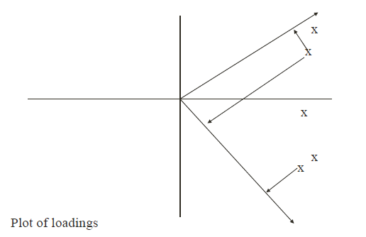
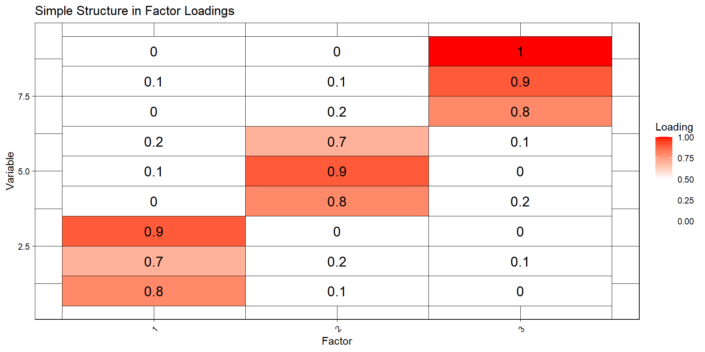

We will briefly talk about exploratory factor analysis or EFA, and defer the confirmatory factor analysis (CFA) for a later date, if time permits.
These slides are (mostly) based on chapter 8 of Zelterman and chapter 5 of Everitt.
Everitt is much more detailed: two chapters for EFA and CFA.
PCA and FA
FA is viewed as being different from PCA
PCA
is more exploratory
may not require as many assumptions
FA
may require additional assumptions (normality)
often associated with a search for causal models
rotation is important
Big difference is philosophical
FA program will do a PCA but not visa versa
Motivation
In many areas of psychology, and other disciplines in the behavioural sciences, often it is not possible to measure directly the concepts of primary interest.
Two obvious examples are intelligence and social class. In such cases, the researcher is forced to examine the concepts indirectly by collecting information on variables that can be measured or observed directly and can also realistically be assumed to be indicators.
The psychologist who is interested in an individual’s “intelligence”, for example, may record examination scores in a variety of different subjects in the expectation that these scores are dependent in some way on what is widely regarded as “intelligence” but are also subject to random errors.
And a sociologist, say, concerned with people’s “social class” might pose questions about a person’s occupation, educational background, home ownership, etc., on the assumption that these do reflect the concept he or she is really interested in.
Latent variables
Both “intelligence” and “social class” are what are generally referred to as latent variables
latent variables concepts that cannot be measured directly but can be assumed to relate to a number of measurable or manifest variables.
The method of analysis most generally used to help uncover the relationships between the assumed latent variables and the manifest variables is factor analysis.
The model on which the method is based is essentially that of multiple regression, except now the manifest variables are regressed on the unobservable latent variables (often referred to in this context as common factors), so that direct estimation of the corresponding regression coeffcients (factor loadings) is not possible.
Types of factor analysis
The first is exploratory factor analysis, which is used to investigate the relationship between manifest variables and factors without making any assumptions about which manifest variables are related to which factors.
The second is confirmatory factor analysis which is used to test whether a specific factor model postulated a priori provides an adequate fit for the covariances or correlations between the manifest variables.
We will first consider the EFA.
Simple example
Spearman considered a sample of children’s examination marks in three subjects, Classics (\(y_1\)), French (\(y_2\)), and English (\(y_3\)), from which he calculated the following correlation matrix for a sample of children:
If we assume a single factor, then the single-factor model is specified as follows:
\[
\begin{aligned}
y_1 &= \lambda_1 f + u_1, \\
y_2 &= \lambda_2 f + u_2, \\
y_3 &= \lambda_3 f + u_3.
\end{aligned}
\] In this example, the underlying latent variable or common factor, \(f\), might possibly be equated with intelligence or general intellectual ability.
Explanation
The terms \(\lambda_1, \lambda_2\) and \(\lambda_3\) which are essentially regression coeffcients are, in this context, known as factor loadings.
The terms \(u_1\), \(u_2\), and \(u_3\) represent random disturbance terms and will have small variances if their associated observed variable is closely related to the underlying latent variable.
The variation in \(u_i\) actually consists of two parts, the extent to which an individual’s ability at Classics, say, differs from his or her general ability and the extent to which the examination in Classics is only an approximate measure of his or her ability in the subject.
In practise, no attempt is made to disentangle these two parts.
The \(k\)-factor analysis model
To begin, we assume that we have a set of observed or manifest variables, \(\mathbf{y}^{\top} = (y_1, y_2, \dots, y_p)\), assumed to be linked to \(k\) unobserved latent variables
or common factors \(f_1, f_2, \dots, f_m\), where \(m < p\), by a regression model of the form
The \(\lambda_j\)s are essentially the regression coefficients of the \(y\)-variables on the
common factors.
The \(k\)-factor analysis model
… but in the context of factor analysis these regression coefficients are known as the factor loadings and show how each observed variable, \(y_i\), depends on the common factors.
The factor loadings are used in the interpretation of the factors; i.e., larger values relate a factor to the corresponding observed variables
… and from these we can often, but not always, infer a meaningful description of each factor.
The \(k\)-factor analysis model
The regression equations above may be written more concisely as
We assume that 1. the random disturbance terms \(u_1, \dots, u_p\) are uncorrelated with each other, and 2. uncorrelated with the factors \(f_1, \dots, f_m\).
(The elements of \(\mathbf{u}\) are specific to each \(y_i\) and hence are generally better known in this context as specific variates.)
Together, these assumptions (A1-A3) are sufficient for us to fit the model.
The \(k\)-factor analysis model
The two assumptions imply that, given the values of the common factors \(f\), the manifest variables \(y\) are independent; that is, the correlations of the observed variables arise from their relationships with the common factors.
We also assume that factors are uncorrelated with one another, in which case the factor loadings are the correlations of the manifest variables and the factors.
Model
These assumptions can also be used to describe an alternative form for the factor analysis model. If we begin at [(1)], then we can write
\[
(y - \mu)(y - \mu)' = (\mathbf{\Lambda} f + \mathbf{u})(\mathbf{\Lambda} f + \mathbf{u})'
\]
\[
= \mathbf{\Lambda} f (\mathbf{\Lambda} f)' + \mathbf{u} (\mathbf{\Lambda} f)' + \mathbf{\Lambda} f \mathbf{u}' + \mathbf{u} \mathbf{u}'.
\]
Using the three assumptions A1-A3, we can then express the covariance matrix ( ) of \(\mathbf{y}\) as
The covariances are not dependent on the specific variates in any way; it is the common factors only that aim to account for the relationships between the manifest variables.
Rescaling the variables
Suppose, we re-scale the variables to \(\mathbf{z = C y}\), where \(\mathbf{C} = diag(c_i)\).
We can show that the factor analysis model holds for \(\mathbf{z}\) with factor loading matrix \(\Lambda_z = C \Lambda_y\) and \(\Psi_z = C \Psi C = diag(c_i^2 \psi_i)\).
The factor loading matrix for the scaled variables \(y\) is obtained by multiplying the \(i\)th row of \(\mathbf{y}\) by \(c_i\), and the same applies to specific variances.
If the scaling factors are \(c_i = 1/s_i\) (where \(s_i\) is the standard deviation of \(y_i\)), the factor analysis model effectively applies to the correlation matrix instead of the covariance matrix.
As a result, factor analysis can be conducted using either the covariance or correlation matrix, yielding equivalent outcomes.
R functions
In R, we use factanal(x,factors=m) where x is the data arranged in the usual fashion as columns of variables and rows for observations.
The m parameter specifies how many factors we want R to fit.
Usually, we try to fit a relatively small number of factors (at most three or four) because of the difficulty of their interpretation.
There is also a formal statistical hypothesis test performed in factanal() testing whether m factors are adequate or not.
Solutions?
Two main methods:
principal factor analysis, and
maximum likelihood factor analysis,
Principal Factor method
Try to ignore the diagonal elements. Replace with an estimate of the common variance. Usually the squared multiple correlation between one variable and the others is used.
The method may also be iterated.
Maximum Likelihood method
fits the model by fitting the covariance/correlation structure using the likelihood function for the multivariate normal distribution.
The likelihood involves the variance covariance matrix which may be written as a function of the loadings and specific variances.
Requires iterative solution
Hemangioma example
Most common childhood cancer diagnosis. It appears as a lump of blood vessels on the skin. If left untreated it usually resolves within a few years. Some parents opt for surgical removal.
Data: measurements on several genetic markers thought to be related to the disease.
The age, measured in days, is the infant’s age at the time of the surgery, i.e., how long the infant was exposed to the tumor.
It was hypothesized exposure to the tumor might influence the magnitude of the expression of some of these genes over time.
We examine the three-factor loadings to see (C.Myc, EZH2, IGF-2) collectively appear to work together in the first factor. The second factor is almost entirely the DLK marker. The third factor is almost represented by the RB marker. Age plays almost no part, contrary to our original hypothesis.
The uniqueness, sometimes referred to as noise, corresponds to the proportion of variability, which can not be explained by a linear combination of the factors. This is the \(\Psi\) in (F2).
A high uniqueness for a variable indicates that the factors do not account well for its variance.
Call:
factanal(x = hemangioma, factors = 3)
Uniquenesses:
Age RB p16 DLK Nanog C.Myc EZH2 IGF.2
0.963 0.034 0.291 0.005 0.616 0.005 0.491 0.254
Loadings:
Factor1 Factor2 Factor3
Age -0.168
RB -0.170 0.964
p16 0.381 0.747
DLK 0.971 -0.211
Nanog 0.475 0.389
C.Myc 0.930 0.280 -0.227
EZH2 0.614 -0.115 0.343
IGF.2 0.767 0.351 0.187
Factor1 Factor2 Factor3
SS loadings 2.225 1.751 1.364
Proportion Var 0.278 0.219 0.170
Cumulative Var 0.278 0.497 0.668
Test of the hypothesis that 3 factors are sufficient.
The chi square statistic is 8.03 on 7 degrees of freedom.
The p-value is 0.33
Rotations!
Up until now, we have conveniently ignored one problematic feature of the factor analysis model, namely that, there is no unique solution for the factor loading matrix.
That is, the loadings are only unique up to a rotation
That is, you can multiply the factors \(f\) by an orthogonal matrix \(M_{p \times p}\) without changing the variance decomposition.

Simple structure and rotation
The solution from PCA and other extraction methods focus on “fit to the correlation” matrix not on explanation.
It was observed early that one could rotate the solution (that is rotate the loadings matrix) and not change the fit.
Hence we look at rotation as a way to make the solution better.
This leads to simple structure as a definition of better.
Most loadings on any factor should be small and only a few should be large in absolute value. A factor only has a few high loading.
A specific row of the loadings matrix \(\Lambda\) should display nonzero loadings on only one or at most a few factors. A variable loads on only a few factors
Any pair of factors should have different patterns of loadings. Unique factors.
To be continued
Factor Analysis - Part II
Recap: Model
The factor analysis model has two equivalent representation:
We assume that 1. the random disturbance terms \(u_1, \dots, u_p\) are uncorrelated with each other, and 2. uncorrelated with the factors \(f_1, \dots, f_m\).
(The elements of \(\mathbf{u}\) are specific to each \(y_i\) and hence are generally better known in this context as specific variates.)
Up until now, we have conveniently ignored one problematic feature of the factor analysis model, namely that, there is no unique solution for the factor loading matrix.
That is, the loadings are only unique up to a rotation
That is, you can multiply the factors \(f\) by an orthogonal matrix \(M_{p \times p}\) without changing the variance decomposition.
Simple structure and rotation
The solution from PCA and other extraction methods focus on “fit to the correlation” matrix not on explanation.
It was observed early that one could rotate the solution (that is rotate the loadings matrix) and not change the fit.
Hence we look at rotation as a way to make the solution better.
This leads to simple structure as a definition of better.
Most loadings on any factor should be small and only a few should be large in absolute value. A factor only has a few high loading.
A specific row of the loadings matrix \(\Lambda\) should display nonzero loadings on only one or at most a few factors. A variable loads on only a few factors
Any pair of factors should have different patterns of loadings. Unique factors.
Rotation
Most users of factor analysis rotate the solution to try to get factors which display simple structure.
This makes them easier to interpret.
Rotation (orthogonal) does not change the distance properties of the loadings.
Hence total variance and variance explained for each variable remains unchanged.
However it is now distributed differently amongst the factors.
Why invariant?
Suppose we have an orthogonal matrix: \(M\) such that \(M M^\top = M^\top M = I\).
Then, we can modify a factor model by introducing the factor \(M\) that won’t change the covariance.
\[
\mathbf{y = (\Lambda M)(M^\top f) + u}
\]
New factors: \(M^\top f\) and new loadings \(\Lambda M\).
It may be that a more interpretable orthogonal solution can be achieved using the equivalent model with loadings \(\mathbf{\Lambda^* = \Lambda M}\) for some particular orthogonal matrix, \(\mathbf{M}.\)
Such a process is generally known as factor rotation.
Criticism of Factor Analysis
Factor analysis has faced criticism due to the flexibility of factor rotation.
Some argue that rotation allows researchers to manipulate results to fit preconceived notions (Blackith & Reyment, 1971).
However, these concerns are largely unjustified—rotation is a mathematical tool, not a way to change the underlying structure.
Purpose of Factor Rotation
Rotation simplifies factor analysis results, making them more interpretable.
It does not alter the fundamental structure of the solution.
A well-rotated solution:
Has each variable loading strongly on only one factor.
Avoids bipolar factors and intermediate loadings.
Groups variables into distinct sets linked to specific factors.
Simple Structure in Factor Analysis
Thurstone (1931) defined simple structure as a desirable property of factor solutions, characterized by:
Each row of the factor loading matrix has at least one zero.
Each column of the loading matrix has at least m zeros.
Every pair of factor columns has variables with zero loadings in one but not the other.
With four or more factors, most variables should have zero loadings in both columns.
Only a few variables should have nonzero loadings in multiple factors.
This structure enhances interpretability, making it easier to distinguish between factors.
Example of simple structure

Achieving Simple Structure
Goal: Observed variables should form distinct groups, loading high on one factor and low/negligible on others.
Medium-sized, ambiguous loadings should be avoided.
Simple structure is sought after determining:
The number of common factors.
The communalities of each variable.
Rotation and Factor Independence
Factor loadings are adjusted via post-multiplication by an orthogonal matrix.
This is equivalent to a rigid rotation of factor axes.
Initially, factors are assumed to be orthogonal (independent) for simplicity.
During rotation, we may relax this assumption, allowing for correlated factors (oblique rotation).
Supports more functionality. For example, the rotate argument has the following description if you look at the help for fa.
“none”, “varimax”, “quartimax”, “bentlerT”, “equamax”, “varimin”, “geominT” and “bifactor” are orthogonal rotations. “Promax”, “promax”, “oblimin”, “simplimax”, “bentlerQ”, “geominQ” and “biquartimin” and “cluster” are possible oblique transformations of the solution. The default is to do a oblimin transformation, although versions prior to 2009 defaulted to varimax.
Other
GPArotation
GPArotation package contains functions for the rotation of factor loadings matrices. The functions implement Gradient Projection (GP) algorithms for orthogonal and oblique rotation. Additionally, a number of rotation criteria are provided. The GP algorithms minimize the rotation criterion function, and provide the corresponding rotation matrix. For oblique rotation, the covariance / correlation matrix of the factors is also provided.
SOME ASSESSMENTS
Error matrix - Compute the estimated variance covariance matrix then compare it with the original matrix or compute the residual matrix. Like to have the off diagonals small
Partial correlation matrix - correlation matrix between the variables after partialling out the information provided by the factors. For example, the correlation between y1 and y2 adjusted for factor 1. These values should be near zero. (There is a test Kaiser-Meyer-Olkin test for adequacy using the partial correlations).
KMO test
Henry Kaiser (1970) introduced an Measure of Sampling Adequacy (MSA) of factor analytic data matrices.
“In his delightfully flamboyant style, Kaiser (1975) suggested that KMO > .9 were marvelous, in the .80s, mertitourious, in the .70s, middling, in the .60s, medicore, in the 50s, miserable, and less than .5, unacceptable.”
Loadings – associated with correlations with variables and weights, usually applied in orthogonal factor model.
Pattern – estimates of weights in factor analysis – analogous to the coefficients in regression (\(\Lambda\) in the model) (preferred over structure coeffs). Replaces the loadings matrix in oblique rotation. Squares represent unique contribution of factor to variable.
Factor Structure – correlation between the factors and variables, more commonly applied in oblique situations (same as pattern in orthogonal but not oblique due to correlation between factors). Represent unique contribution from factor and contribution from correlation with other factors.
Pattern usually reported but may not be good when there are highly correlated factors. Analogous to reporting \(\beta(x_i)\) in regression versus \(corr(y,x_i)\)
Comments
Different methods may yield considerably different solutions and rotated solutions.
Rotation may obscure a dominant factor and is influenced by the number of factors retained.
Rotation should follow the maximum likelihood solution (as the constraint was added to insure uniqueness of a solution).
With PCA, rotation destroys the variance maximizing property.
The total variance explained becomes spread over the factors. For example, factor 1 may not have the largest variance.
Factor Analysis vs. PCA
Both reduce dimensionality, but differ in approach:
Factor Analysis explains covariances/correlations using common factors.
PCA explains variance in observed variables.
Adding a new PCA component (m → m+1) leaves prior components unchanged, but adding a factor in Factor Analysis can alter all factors.
PCA scores are straightforward to compute; Factor scores require more complex methods.
Covariance, Correlation, and Interpretation
PCA: Principal components from correlation vs. covariance matrices are generally different.
Factor Analysis (ML): Results from correlation vs. covariance matrices are essentially equivalent.
Rotation in Factor Analysis helps interpretability but does not change the mathematical structure.
COMMENTS - SAMPLE SIZE
No hard rules
but with good factors
at least 5 observations per variable
at least 100 observations
More observations required for weaker relationships \(n > 10\times p\).
COMMENTS/ STRATEGIES
Try more than one method to see if results are consistent!
If the data is large enough, try splitting the data in half to see if the solutions are similar.
The choice of the number of factors is critical when the solution is rotated. Try dropping or adding a factor to see how stable the rotated solution is.
Plot the data if possible – look for linearity and normality Remove variables that are linear combinations of other variables.
These cause problems with ML methods Remove variables that represent single factors (factors that are made of only one variable).
These represent solitary factors that may confuse rotation methods. You can of course look at these but worry about the effect of keeping them

Comments
Different methods may yield considerably different solutions and rotated solutions.
Rotation may obscure a dominant factor and is influenced by the number of factors retained.
Rotation should follow the maximum likelihood solution (as the constraint was added to insure uniqueness of a solution).
With PCA, rotation destroys the variance maximizing property.
The total variance explained becomes spread over the factors. For example, factor 1 may not have the largest variance.